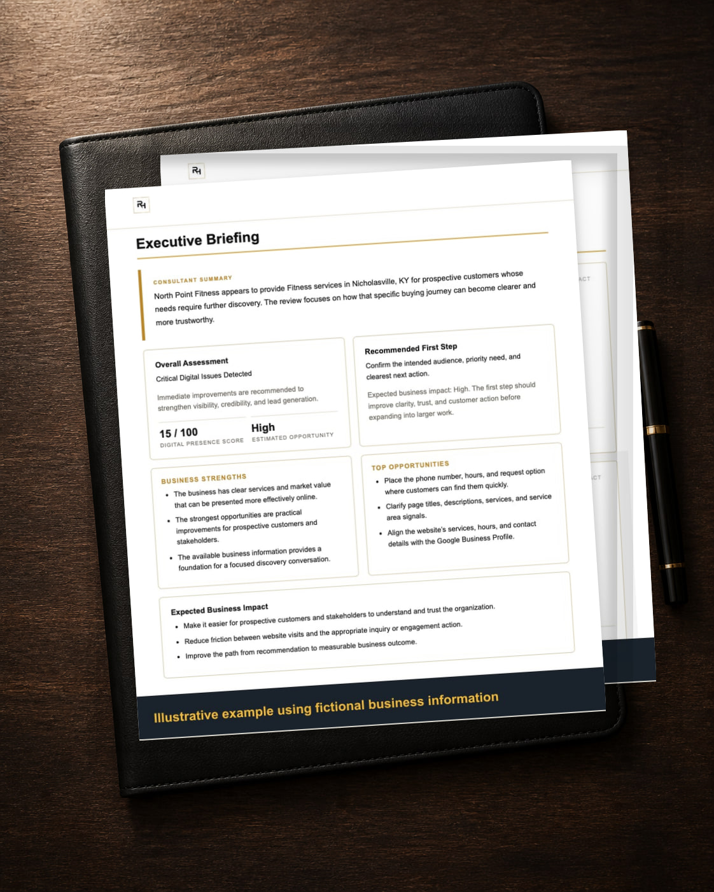
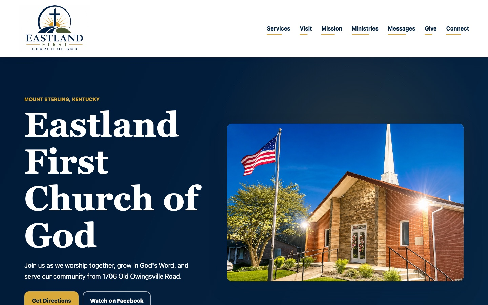
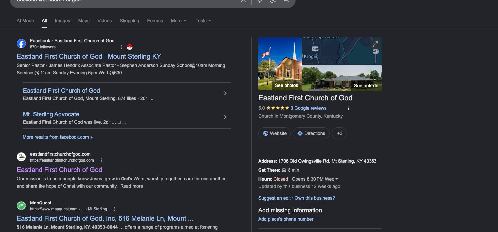
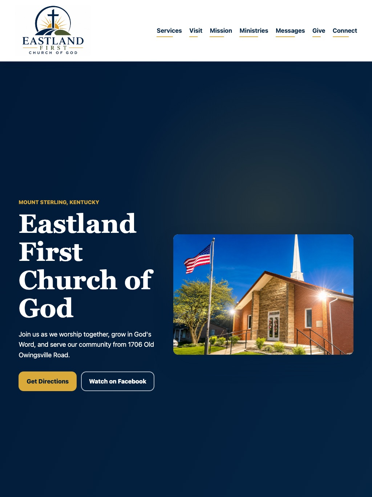
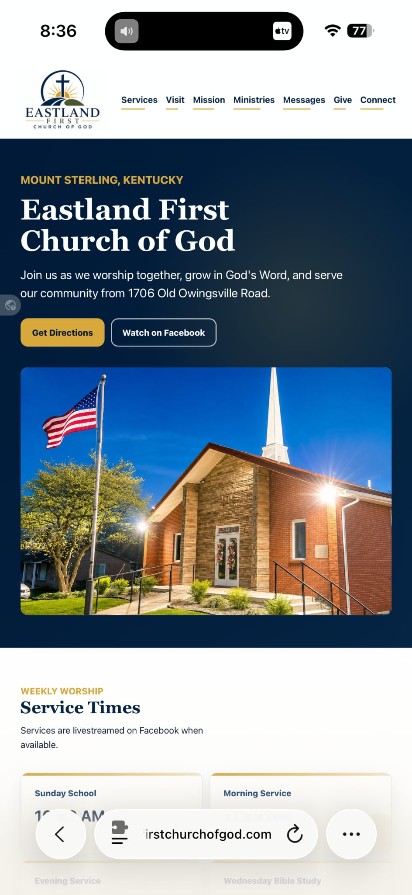
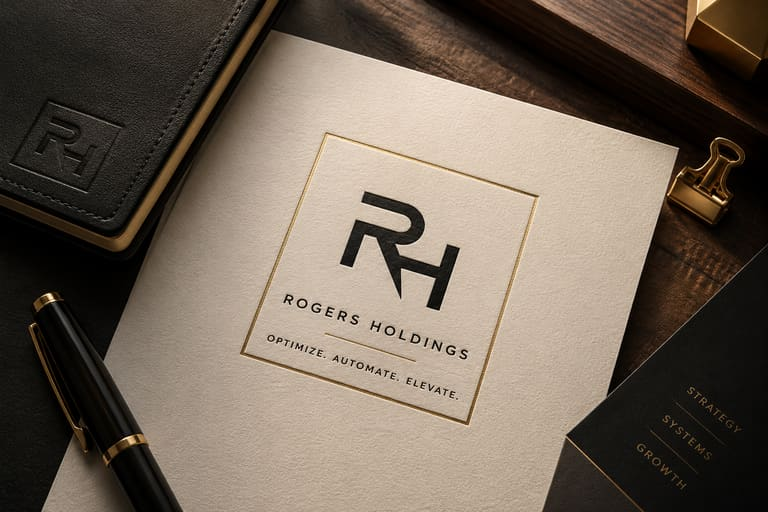

Missed opportunities
Inquiries and follow-ups are not consistently captured, assigned, or completed.
Business optimization for small and growing businesses
We identify operational bottlenecks, establish clear priorities, and implement practical systems that help businesses work better.
Complimentary written review · Human-reviewed · Typically within three business days

Where improvement begins
Disconnected tools, unclear ownership, manual work, and weak customer pathways can quietly limit growth. The first step is seeing the operation clearly enough to decide what deserves attention.
Inquiries and follow-ups are not consistently captured, assigned, or completed.
Repetitive work and scattered information consume time that should support customers and growth.
Leaders lack a dependable view of priorities, performance, and work that needs attention.
Websites and technology exist, but they are not configured around the way the business actually operates.
One disciplined approach
Assessment creates clarity. Prioritization protects time and investment. Implementation turns recommendations into better operations.
Inspect the digital presence, customer experience, workflows, systems, and visible operational weaknesses.
Separate important improvements from distractions and establish a practical order of action.
Build or configure the websites, workflows, automations, and business systems needed to work better.
How the work moves
Each step keeps recommendations tied to the operation and the work accountable to a clear business purpose.
Gather evidence.
Interpret the constraint.
Order the work.
Build the improvement.
Measure and refine.
Practical capabilities
The right solution depends on the constraint. Six related capabilities support three business outcomes: clearer customer pathways, better information systems, and stronger operations.
Improve visibility, credibility, local search foundations, and the path from attention to action.
Build and improve clear, useful websites that support customers, inquiries, and business goals.
Organize information, communication, documents, forms, and internal workflows around how the team works.
Reduce repetitive work and improve consistency through practical, maintainable process automation.
Apply AI where it can responsibly support research, documentation, communication, and repeatable business processes.
Assess bottlenecks, clarify priorities, design better workflows, and guide implementation over time.
Business Optimization Platform
Our internal platform organizes evidence, documents findings, evaluates priorities, and keeps implementation connected to the original business need.
Behind every assessment is Rogers Holdings’ internal Business Optimization Platform, helping organize evidence, priorities, and next actions.
Used internally to organize evidence and priorities. Clients receive clear findings and next actions—not another platform to manage.
Technology supports the process. Business value drives the recommendation.Request Your Business Snapshot
Execution evidence
A clearer digital front door for a growing community.
Eastland First Church of God previously relied on Facebook as its primary online presence. Rogers Holdings provided a dedicated website that created an owned digital home and a clearer path to service times, ministries, messages, giving, directions, and contact.
The organization needed a clearer, more credible digital home that made essential information easier for visitors to find.
We identified opportunities in mobile usability, visitor information, content structure, search foundations, and community engagement.
We delivered a modern mobile-first website with clearer navigation, organized ministries, visitor information, social integration, and a stronger search foundation.
Visitors now have a clearer mobile path to essential information, ministries, and contact.





Owner-led by design
Rogers Holdings works directly with business owners and leaders to understand the operation, recommend practical improvements, and help put the right changes in place.
Why Rogers Holdings
Every recommendation should solve a real problem, support the people doing the work, and create value that lasts.
A clear place to begin
Start with a practical review of your business, website, and digital foundation.
Complimentary written review · Human-reviewed · Typically within three business days
Prefer a direct conversation?
briankeith@rogersholdingsllc.com859-404-7300